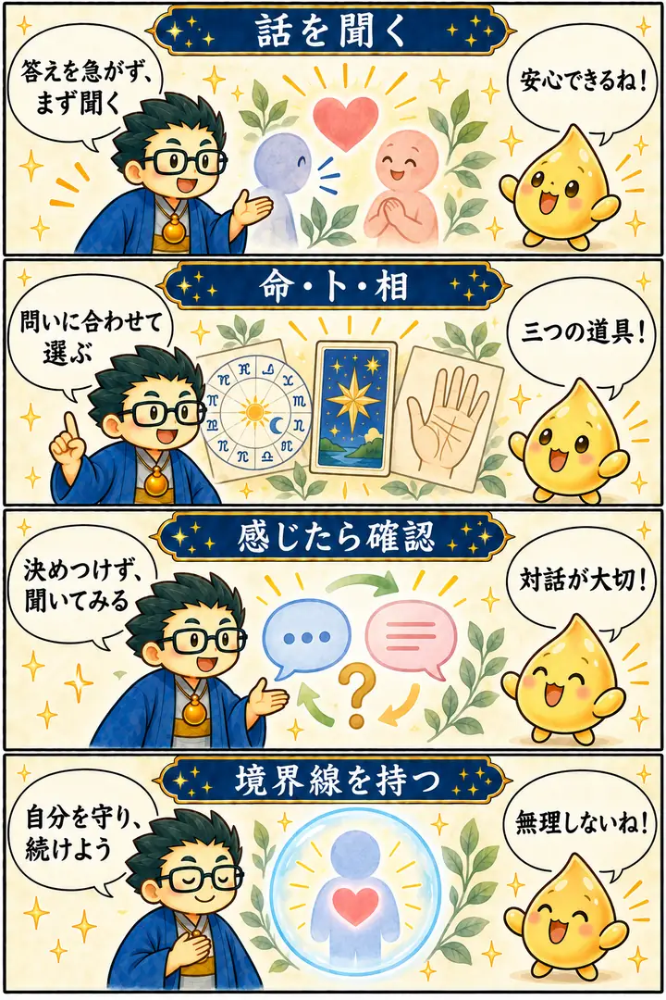

第3期 Zoom講座・第2回
占いの種類 命・卜・相／エンパス鑑定
この回の要約
占いの方法は、相談者の問いに合わせて選ぶ。答えを急ぐ前に話を聞く。
受講者の電話占い体験から、「話せたことで気持ちが軽くなった」という鑑定の価値を考えます。命・卜・相という三つの見方を整理し、講師が「エンパス」と呼ぶ感じ取り方を扱うときは、思い込みを避けて本人に確認し、自分の境界線も守ることを学びます。
4コマ漫画でつかむ

タイムスタンプ
時間を押すと、上の動画がその場面から再生されます。
- 00:00講座開始・電話タロット鑑定の体験談
- 03:35初めて受けた電話占い
- 05:01涙から笑顔へ変わった30分
- 06:41参加者にも人を元気にする力がある
- 07:10寄り添いすぎる人と占いの距離感
- 10:24Zoom講座と交流会の構想
- 12:34過去動画を見られる学習サイト
- 15:41スマートフォン対応の占いアプリ
- 16:36AIと占いに大きな波が来ている
- 18:15受講者の取扱説明書を作る
- 20:15西洋占星術の二重円・三重円をAIで制作
- 22:53プログラマーのオープン文化
- 23:48AIへ何度でも修正を頼める
- 25:37第3期は参加者も一緒に制作する
- 28:35みんなで占いを広げる未来
- 30:53占いで世の中を明るくする
- 32:16天岩戸は楽しさで開く
- 33:14占いで人間関係を理解する
- 35:38人生で最も大切なのはタイミング
- 38:10AIと占いは今始める
- 40:18異世界転生と現在地
- 41:16現実でもステータスオープンできる
- 43:00命占・卜占・相占
- 45:23エンパス能力の種類
- 48:08参加者への個別エンパス鑑定
- 49:38感情一体型と他人の感情
- 51:54身体・感情・霊性の直感
- 55:25共感力が強いと営業が難しい理由
- 1:00:57植物共感と美的感覚
- 1:03:25鳳凰・龍・神仏の加護
- 1:05:54身体一体型と鉱物共感型
- 1:09:31エンパスの境界線を閉じる
- 1:10:44能力を知らせるサニワの役割
- 1:15:17頼まれ事で才能が動き出す
- 1:17:22丙午と時代の転換
- 1:21:12適職と天職を見つける旅
- 1:24:30占いは自分の能力を扱う日輪刀
- 1:26:17異世界転生と現実の統合
- 1:27:39自分だけの答えを求める時代
- 1:29:04五芒星と六芒星
- 1:30:41三元九運と180年周期
- 1:33:00相場と時代の変化
- 1:35:42新NISAと海外投資についての考察
- 1:37:51星の角度と集団意識
- 1:38:31移動平均線と大衆心理
- 1:39:59満月・新月と相場の反転
- 1:42:22安房神社と占い
- 1:43:48ペンタゴンチャート
- 1:46:43正しい情報が広がるとは限らない
- 1:48:00AI・金融系チャンネルの紹介
- 1:51:59先祖のお墓とパワースポット
- 1:54:31底辺から上がる景色を見たい
- 1:55:16王・殿様だったという前世の霊視
- 1:56:54講師のAI音声制作
- 1:57:13学習サイトと次回講座の案内
覚えておきたいこと
- 鑑定の価値には、相談者が安心して話せる進行も含まれる。
- 命・卜・相は、相談者の問いに合わせて使い分ける。
- 感じ取ったことを事実として断定せず、本人へ確認する。
- 「エンパス」は講師の見立てとして扱い、医学的な診断と混同しない。
- 寄り添うことと、際限なく引き受けることは別。時間と範囲を決める。
復習ポイント
講義内の占術上の説明・時代の読み・象徴的な解釈は、講師の見立てです。客観的な事実や将来を保証するものではありません。